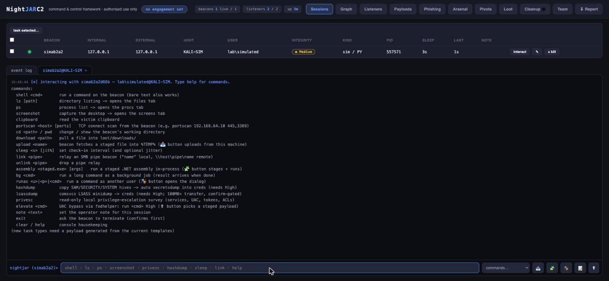

A command-and-control framework written from scratch for lab work: beacons, listeners, pivoting, payload staging and reporting, with every operator action attributed and logged.
test_beacon.py) checking in to a loopback listener.

The interface is a single page: a session table at the top, a tabbed console below it. Each beacon gets its own tab, the event log gets one, and the two stay side by side, so you can never run a command without the log of it being one click away.
This is the design decision the whole framework is organised around, and it is the opposite of what a real adversary would build. Plain code, no evasion in the default path, and every single action written to an append-only event log and attributed to the operator who ran it. Payload evasion options exist, because without them it isn't a realistic test, but they are opt-in per payload and recorded in the payload metadata, the event log and the exported report.
The reasoning is simple. A red-team tool that hides what it did is useless to the blue team afterwards, and the debrief is where the value actually is. If a detection didn't fire, I need to be able to point at the exact minute and the exact payload options and say this is what you missed and this is why.
Multi-operator. Accounts, login, per-action attribution, presence, and
team chat threaded into the same event log. An opt-in TLS admin listener lets a second
operator connect remotely; the first account has to be created locally. Lost the
password? Delete the operators file on disk and it falls back to single-operator mode.
Disk access is the recovery path, deliberately.
Pivoting. A per-beacon SOCKS5 proxy opens a local port that tunnels
through the beacon, so proxychains and curl --socks5 work
against the far side. Implants drop to a 100 ms cadence while a stream is open and
return to their normal sleep afterwards.
Listeners. HTTPS listeners with configurable bind, beacon and staging
URIs, and a server banner. Nothing listens until you start it: the server comes up cold
and autostart is a per-listener flag you have to set on purpose.
Beacon operations. Shell, directory and process listing, screenshots,
portscanning from the beacon, file upload and download, runtime sleep and jitter
changes, background jobs for long commands, in-process .NET assembly execution, and
running a command as another user with credentials pulled from the loot store.
Loot and cleanup. Captured credentials go to a curated store with
passwords masked in every log; a cleanup tracker records everything dropped on a host so
it can be removed; kill-dates stop beacons outliving the engagement window.
Reporting. One click produces a Markdown report from the event log,
which is possible precisely because everything was logged and attributed as it
happened.
There are excellent C2 frameworks and I use them. But using one teaches you how the operator UI works, not how the protocol works, and the interesting failures in a C2 are all in the parts you don't see: check-in cadence and jitter, how tasks queue when a beacon is asleep, what a pivot does to timing, how state survives a server restart.
Building one made those visible, and it made me considerably better at the defensive half of the job. Once you have written the code that decides how often a beacon phones home, the shape of that traffic in somebody else's network logs stops being abstract.